Tiantian Li
Hi! I am Tiantian, a junior studying CS at Cornell University. This webpage documents my lab work in ECE 4160 Fast Robots, taken in the Spring 2023 semester.
This course focuses on systems level design and implementation of dynamic autonomous robots. We design a fast autonomous car and explore dynamic behaviors, acting forces, sensors, and reactive control on an embedded processor, as well as the benefit of partial off-board computation, low latency software, and noise tolerant implementation [ECE4160 Website].
In Lab 1, I perform basic setup and gain familiarity with the SparkFun RedBoard Artemis Nano through various examples.
The Artemis board is compatible with SparkFun's Arduino core and can be programmed under the Arduino IDE. I follow the lab instructions outlined below to set it up:
First, I ran a basic example to make sure everything
is
functional. The Blink example toggles the on-board LED on and off by using the
digitalWrite function. The result is shown in this video.
This example shows how to communicate with the board
over serial. The baudrate is set to 115200, telling the board how
fast information is transferred. The code reads input from the serial port using
Serial.read() and writes the data back using
Serial.write(). One can also print to serial port using
Serial.println(). The difference between
Serial.write() and Serial.println() is that
Serial.write() writes binary data to the serial port while
Serial.println() prints data to the serial port as ASCII text.
Therefore, Serial.write() is simple and fast.
Serial.println() on the other hand is more versatile.
Below is a screen shot containing Serial Monitor to show serial communication.
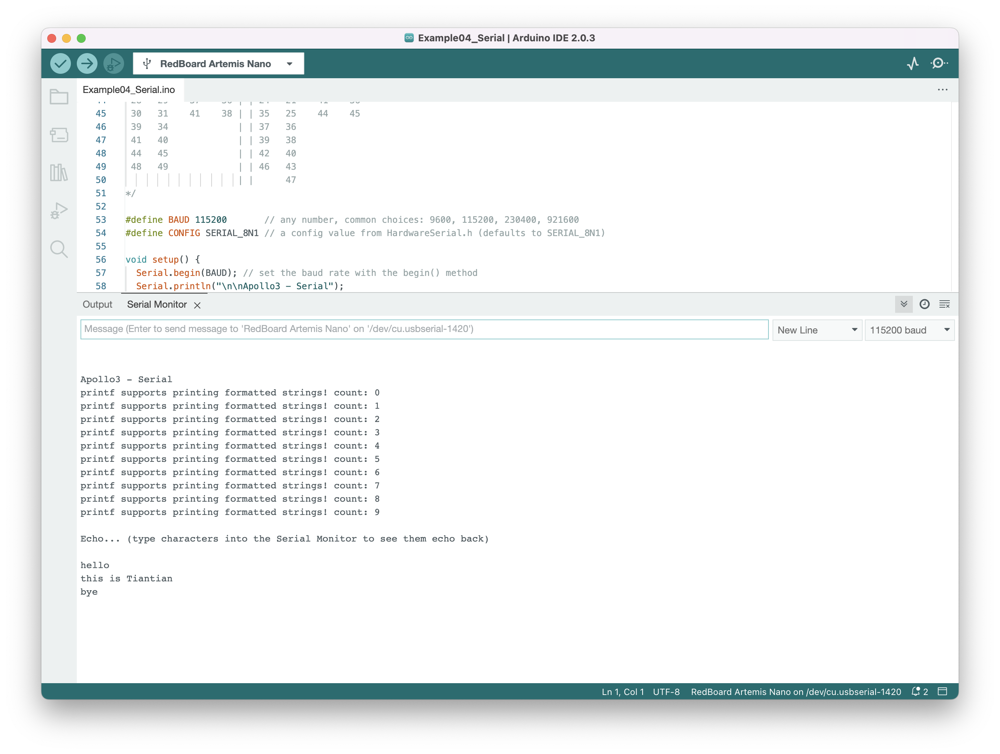
The microcontroller includes an onboard ADC (analog to
digital converter) that is able to read analog voltages from 0V to 2V. It also has
some internal ADC channels that can measure things like the internal die
temperature. I modify the example to output temperature in Fahrenheit instead of raw
ADC counts. In the video below, we can see that the temp reading
changes from around 79 to almost 82 when the chip is touched by finger.
I run into the issue of not being able to print floats with
Serial.printf(). My workaround is to separate the string before and
after the float and print the float on separate lines using
Serial.print().
In this last example, we play with the pulse density
microphone (PDM) on the Artemis board. The example code reads samples from the mic
into a data buffer and performs FFT with arm_cfft_f32() to find the
frequency bin with the largest magnitude. As we can see in this video, the measured
frequency increases significantly when high frequency noise is produced.
In this lab we explore sending data between the Artemis board and the computer via Bluetooth Low Energy, which is optimized for low power use at low data rates. This communication framework will allow us to effectively control and debug our robot in the future.
On the computer side, I follow these detailed
instructions provided by our awesome,
talented, passionate and inspiring course staff.
I installed Python 3.10.8, created a virtual environment, and configured required
packages. The main work on the computer side is done through Python code written in
Jupyter notebooks.
On the Artemis side, Arduino is used to program the board and ArduinoBLE needs to be
installed from the library manager.
Next I downloaded this
codebase, again provided by our wonderful, hard-working,
generous and dedicated teaching team. 😉 The codebase contains useful tools
including class definitions to simplify the transfer and manipulation of data, as
well as demos to get us started.
The code that runs on Artemis sets up one service with three characteristics that
correspond to sending out floats, sending out strings, and receiving strings. While
a Bluetooth connection is established, the program will keep writing floats to the
“float characteristic”, which the computer can then read from. And the program also
responds to the commands it reads from the “receiving string characteristic”, which
is updated by the computer.
On the computer side, we can use Python to send string commands to the Artemis
board, and receive data by either reading a characteristic or waiting for
notifications when a characteristic updates.
Once everything is ready, I load and burn the sketch
into the Artemis board. BLE.address() gives me the board’s MAC address
and I update this info on the computer side. I also generate a new BLEService UUID
and make sure the computer and Artemis agree.
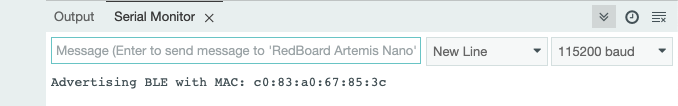
The first task is to implement the ECHO
command which upon receiving a string from the computer, responds with an augmented
string containing the original string. I use the EString class to build
the augmented strings and writeValue() to send responses to the
computer. The result is shown in the screenshot below. On the left is the relevant
section of code running on Artemis. On the right is the Python code to send and
receive data. We can see that the computer sends “Hiiiii” and Artemis replies with
“Robot says -> Hiiiii:)”.
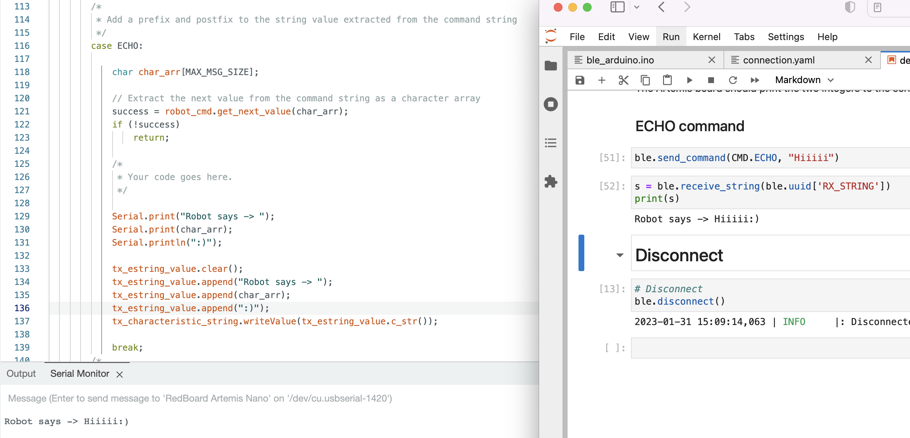
I add a new command that writes the string “T:123456”
to the string characteristic. On the Python side, I had to remember to modify
cmd_types.py to include the new command. This time, instead of calling
receive_string() to read the value, I set up a notification handler
with a callback function which extracts the time. The result is shown below.
“123456” is extracted and printed.
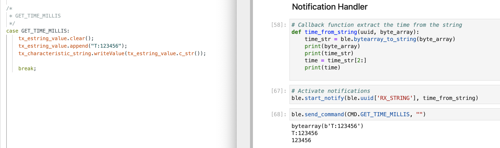
This task requires us to add a command to send five timestamped temperature readings taken once per second. I structured my data in this format: “| time, temp | time, temp …”. And I updated my callback function to extract time and temperature. We can see the data printed in the bottom right corner of this screenshot. 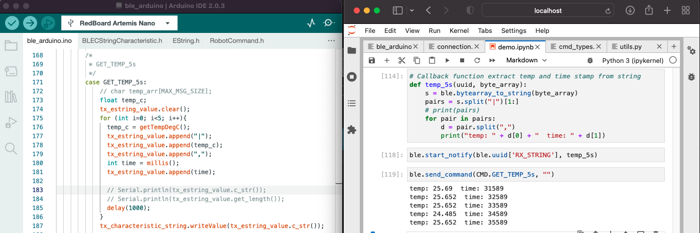
To make sure my data will not exceed the characteristic size limit, I calculated my
maximum possible datasize. Temp has 3 decimal places and is unlikely to go below 0
or above 100 degree celsius so that gives 5 numbers + 1 decimal place = 6
characters. I also used int for millis() instead of
unsigned long. In total for each timestamped temperature there is 1 for
“|” + 6 for temp + 1 for “,” + 7 for time (which gives at least 2hr) = 15 bytes. So
my reply will have at most 5*15 = 75 bytes which is less than the characteristic
size limit of 150 bytes.
For this task, we are rapidly sending timestamped temperatures for five seconds. I check the data size and send data out when it’s about to reach the characteristic size limit. The code and demonstration is shown in this video. On average I was able to send 2100 temperature points.
Theoretically with 384 kB of RAM, the Artemis can store 5 minutes of 32-bit data taken at 320 Hz. (300s * 4 bytes/value * 320 values/sec = 384kB) However, there are also global variables. When Artemis is doing some computations some other local variables are probably needed. Therefore, the actual capacity for storing data is probably less.
We played around with Time of Flight Sensors (ToF) in this lab.
The two VL53L1X sensors have the same default I2C address. In order to address them individually, we can either
I chose the first method.
I planned to put one ToF in front of the car and the other at the back, thinking that after the car flipped 180 in the air during a stunt, it can still go forward. Also rotating 180 can map the surroundings. However, if there are obstacles to the sides of the car, it will not be able to detect them. Here is a photo showing the connections. 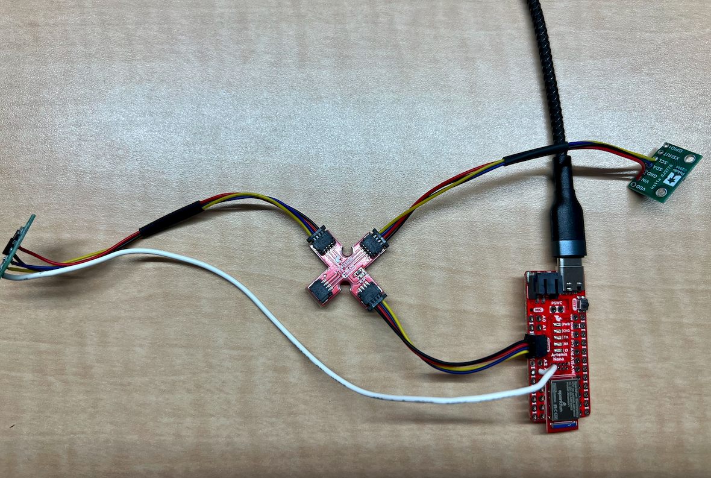
Scan the I2C channel to find the sensor: 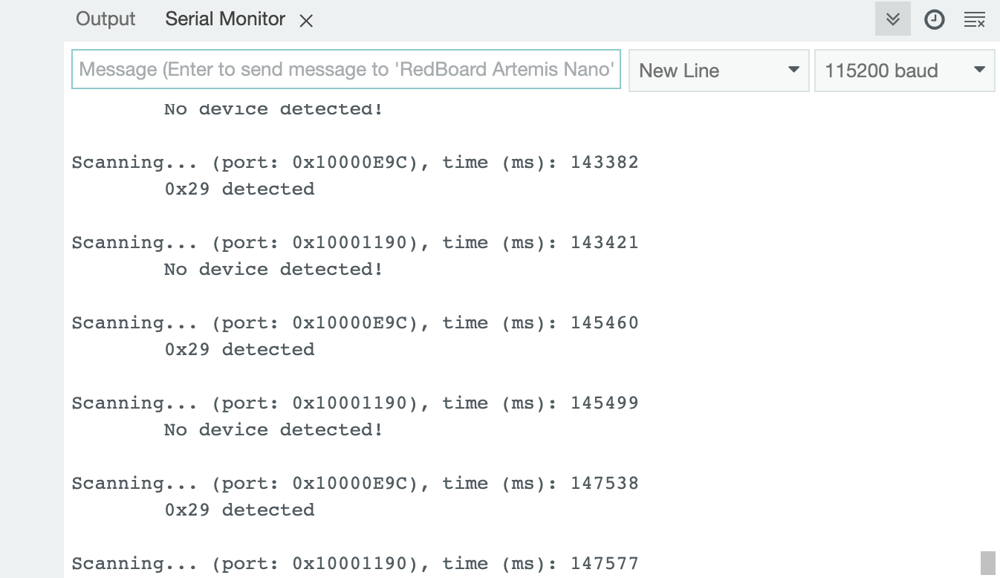 We can see the address is 0x29. This is because the original 0x52 address contains a LSBit for read write status as shown in the datasheet. 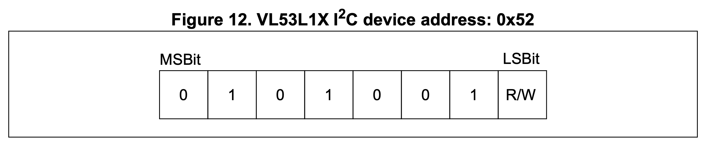
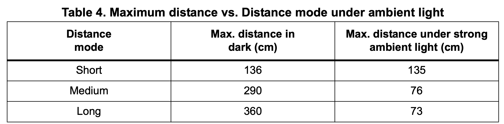
The sensor has three distance modes (actually our library only supports long and
short).
The Long mode has the longest range but is impacted significantly by ambient light
while Short mode is more robust to lighting conditions. I want to go with the Short
mode for the robot since I don’t expect it to navigate long distances and I want it
to be more reliable.
I perform tests to see if the measured distance of the sensor is aligned with the actual distance.
I plotted the resulting data from 3 repeated measurements of a range of 200 mm at 20
mm increments. We can see that the range is about 1400 mm. Going over 1500 mm we see
some weird data. The accuracy is pretty good. The graph is close to y=x when target
is in range. Repeatability is also good. The maximum difference between repeated
measurements is negligible.
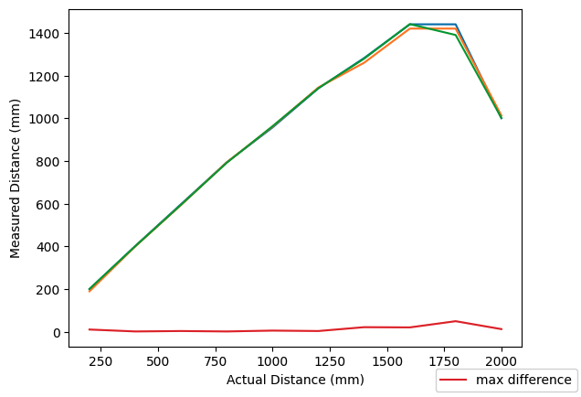
For ranging time, the sensor takes 51 ms from startRanging() to
stopRanging() while in range , and 31 ms when out of range. The time
also slightly increases (51->52) while the object is closer.
I soldered the XSHUT pin of one ToF sensor to pin A3 of the Artemis
board. To turn the sensor off, I pull the pin low.
After changing one sensor's address, I was able to get data from both sensors simultaneously.
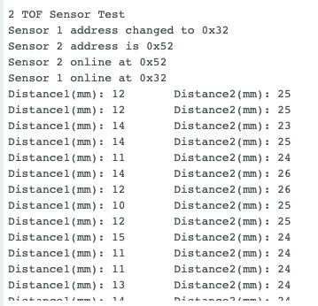Using default mode, time between measurements is 202 ms. With short mode, it reduces to 62 ms. Here is a demo:
Also if the measured distance is longer, the time also increases. Reading the datasheet, I found that changing the timing budget to 20 ms in Short mode can reduce the time needed by the sensor to perform and report ranging measurements data.
Building off of the previous Bluetooth lab, I added a command to get ToF data for a user-specified period of time. The results are then plotted.
In this lab we finally got our car and get to run stunts! We added the Inertial Measurement Unit (IMU) to the car and used sensor fusion to calculate pitch and row from raw data.
Just like what we did for the ToF sensor, I installed SparkFun 9DOF IMU Breakout -
ICM 20948 - Arduino Library. I started exploring using the basic example.
In the code, AD0_VAL is defined to be 1. From reading the datasheet, I
found out that this is the LSB bit of the I2C address. The default is 1 and if we
short the ADR pads on the IMU board, the value becomes 0. This can be used to
connect two IMUs to the same I2C bus (leaving one default and short the other so
they have different address). I wish our ToF sensors have this functionality.
I played around and examine the acceleration and gyroscope data as I move the IMU
board according to the axis drawn on it. When the board is still, the acceleration
along x and y axis are 0 as expected, but the acceleration along z axis is equal to
the gravitational acceleration because we are on earth. When rotating and flipping
the board, I notice that the accelerometer data changes shaper than the gyroscope
data.
I added code to blink the LED when IMU finished setting up. This will be helpful
when debugging later.
I calculated the pitch and roll from accelerometer data.
Here is a demo showing outputs at {-90, 0, 90} degrees pitch and roll:
The sensor is pretty accurate. The error is within 2 degree.
To reduce the effect of noise, I analyze the data in
frequency domain.
I used scipy.fftpack.fft to implement Fast Fourier Tranform. Here is
the result I got with 400 samples and sample rate = 30 Hz.
As we can see, apart from the spick around 0Hz, these is little noise. I set up low pass filter for accelerometer and gyroscope according to the datasheet.
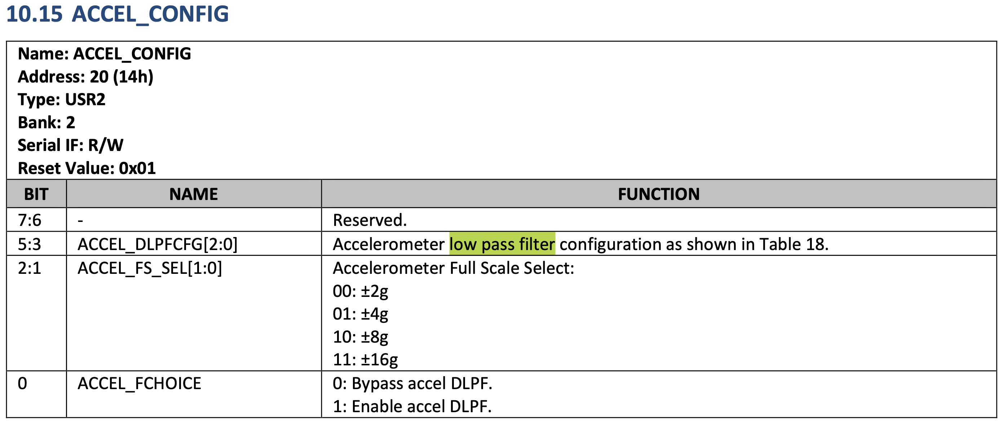For comparison, the figure on the left is raw data and the one on the right is data with low pass filter applied.
I computed pitch, roll and yaw from readings from gyroscope.
This video shows the output comparing to that given by the accelerometer at different sampling rate. We can see that gyroscope’s output suffers from drifting. And increasing the samping frequency improves the accuracy of my estimated angles.
Accelerometer is especially noisy near noise such as our DC motor for the car. However, it does not have any measurement bias since gravity always points down. Gyroscope, on the other hand, has much less noise. But by using dead reckoning and integrating the gyro data to get an estimate for angle, a large bias is introduced [Hunter's tutorial on Complementary Filter]. To get the best of both worlds, I used a complimentary filter to compute an accurate and stable estimate of pitch and roll. The results can be seen in the video.
After getting rid of all the delays and Serial.print() statements, I was able to sample IMU data every 2-4 ms. This screenshot shows the timestamped IMU data I collected.
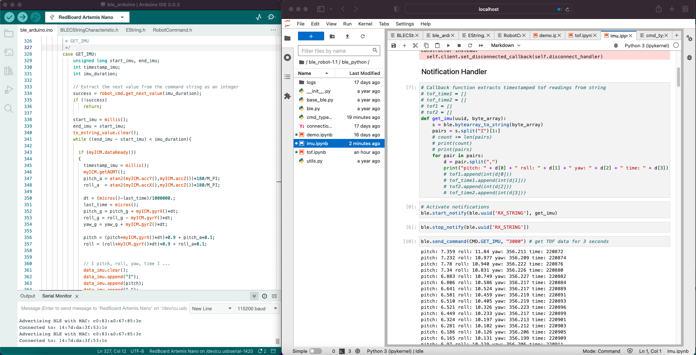To get both ToF and IMU data, I decided to store them in different arrays for the ease of data processing. And I included 2 timestamps for ToF and 1 for IMU. ToF is also much slower than IMU. When we map out the room later, we might want to know the angle/yaw from IMU and the distance from ToF at the same time. Initially, I checked if ToF data is ready first, but only collected 3 ToF data in 5s. So I check if IMU is ready first. That way ToF have time for ranging and I was able to collect more ToF data. Here is a demo collecting and plotting 5 seconds of ToF and IMU data.
Considering the memory of the Artemis, ideally I can store almost 50 seconds of ToF
and IMU data in their arrays. Here is the calculation:
Int takes 2 bytes while floats takes 4 bytes.
ToF has 2 timestamps and 2 distances of type int: 2*2 + 2*2 = 8 bytes per sample.
There are 1/0.062 = 16 samples per second. That gives us 8*16 = 128 bytes/s.
IMU has 1 int timestamp and 3 floats for pitch, roll, and yaw: 1*2 + 3*4 = 14 bytes
per sample. And there are 1/0.002 = 500 samples per second so 14*500 = 7000
bytes/s.
Artemis has 384 kB of RAM. 384000 / 7128 = 53.9 seconds.
We use separate batteries to power the digital
electronics and the motors so the sensitive sensors will not get disturbed from the
noisy motors.
The 3.7V 650mAh battery is used to power the digital electronics and the 3.7V 850mAh
one is powering the motors through the motor driver because the motors draws
significant more amount of current.
I was able to flip the car by driving forward and then quickly drive backward. The car can sometimes flip on its sides too. Here is a demo of the car’s stunts.
I taped the circuits on the the car and recorded data while the car is performing a stunt. Here is the stunt and the ToF and IMU data collected during the stunt.
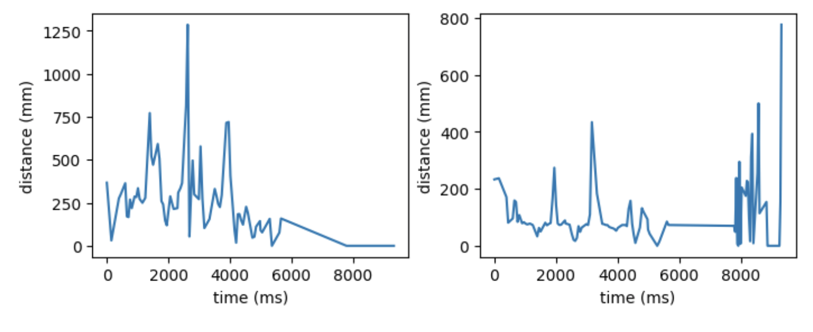 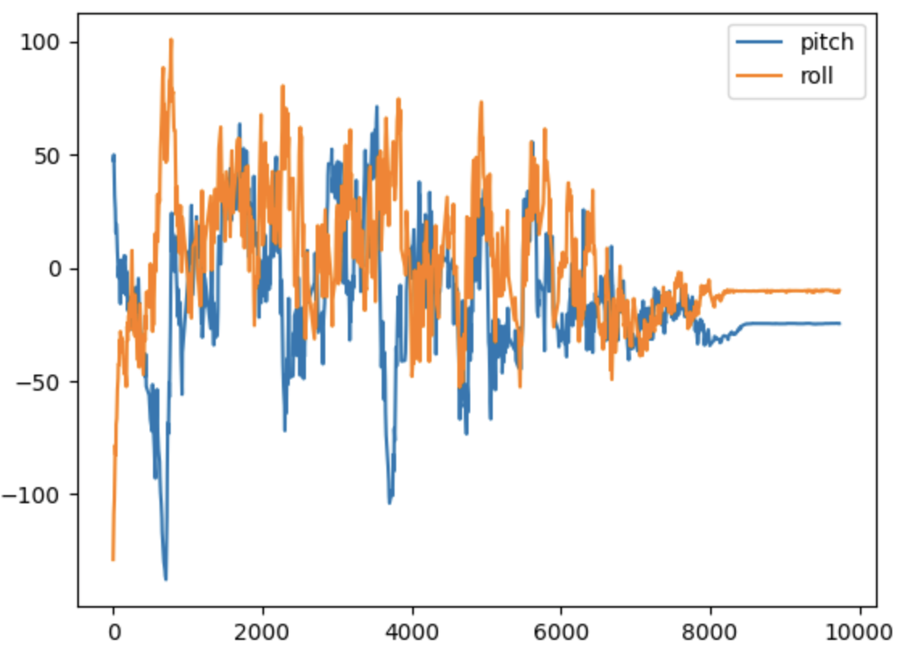In this lab we fully integrated the robot with Artemis, sensors, motor drivers, and batteries. I calibrated the motors so the car moves in a straight line and was able to perform open loop control.
I need to hook up the two motor drivers to Artemis. After reading the datasheet, I
decided to use pin 6,7 and 11,12 since they support pulse width modulated(PWM)
signals.
At first, I connected the signal of one motor driver and powered it from an external
power supply. I chose 3V and a 2A current limit for the power supply since our
battery is going to supply 3V and the peak output current per channel of the motor
driver is 2A.
I then generated PWM signals with analogWrite() and checked the motor
driver output on an oscilloscope.
I connected the motor to the driver and ran the wheels in both directions. A demo is shown in this video.
Next I connected the battery to the motor driver. We use separate batteries to power the digital electronics and the motors so the sensitive sensors will not get disturbed from the noisy motors. The 3.7V 650mAh battery is used to power the digital electronics and the 3.7V 850mAh one is powering the motors through the motor driver because the motors draw significant more amount of current.
After making sure everything works as expected, I hooked up the whole circuitry. A thing to note is that in the datasheet it says the control source and the motor driver must share a common ground. So I shorted the two GND pins on the motor driver, one connected to battery ground and the other to Artemis ground. The final integrated car looks like this:
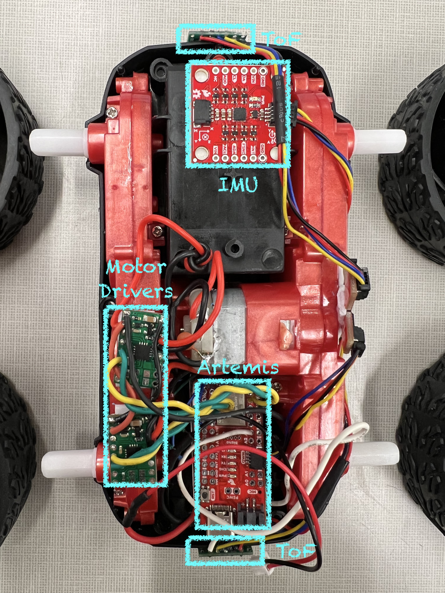
I try to find out the lower PWM limit for which the robot starts to move forward and
on-axis turns while on the ground. By slowly increasing the PWM value I found out a
minimum of 40 is required to get the car to move and 100
for the car to perform an
on-axis turn while on full battery power. Here is a demo.
I also test to see if my car can move in a straight line. I found that it drives off to the left. So I added in a calibration factor to reduce the power of the right motor. In the end the robot is able to follow a straight line for at least 6 feet.
Here is a demo of untethered, open-loop control. I was trying to make the car flip by first moving forward and then moving back suddenly. But the car doesn’t change direction quick enough to do that.
We experiment with PID control on our robot. I try to implement orientational control to make the robot turn to a certain angle. In the end, using the P term in PID already gives me pretty good results.
To efficiently test and tune my system, I implemented the following bluetooth
commands:
SET_SETPOINT allows me to tell the robot how many degrees I want it to
turn. I can send it like this on python side:
ble.send_command(CMD.SET_SETPOINT, "180")
SET_PID allows me to set the P, I, or D term. For example to set the P
term:
ble.send_command(CMD.SET_PID, "P|0.1")
PID tells the robot to perform the task: go forward, turn with PID
orientational control, and then
come back.
While the robot is performing the task, I collected timestamped sensor data and
motor inputs. In the end I send them to the computer via bluetooth for analysis.
I used 4 arrays of size 150 (which is more than I needed) to store
time, yaw, error, and PWM motor input. Related code is shown below:
First, I implemented orientational control when the robot is stationary. The robot is able to turn to a certain angle and maintain a constant orientation even when kicked. Here is a demo and code:
I graphed the data collected. Note that I was only collecting data while the PID controller was running.
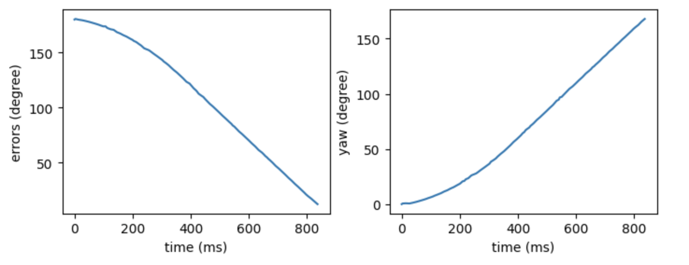I ran into a weird issue while implementing the task. One of my motors that controls my right wheels refuses to turn backwards after turning forward. It can spin in both directions independently but won’t spin anymore if I tell it to switch from forward to backward. And this only happens when I am running both of the motors. As a consequence my robot cannot turn right after turning left. Through experimenting I was able to fix it by setting the right motor first (before the left motor).
Another issue is that while tuning for PID, telling the robot to turn 180 degrees will actually make it turn more than 180 (~220). Its 90-degree turns are perfect tho. I looked at the data and confirmed that this is not caused by PID overshooting. The sensor actually thinks it turned 180 and the error was close to 0. At first I thought this was caused by the drifting of the estimated yaw. Therefore I repositioned the sensor such that the yaw comes from “pitch” which is calculated using a complementary filter on both the gyroscope and accelerometer reading. But the problem still remains. In the end, I played around with it for a bit and found out a setpoint of 120 will make the robot turn 180.
Then I made the robot perform the task: go forward and turn 180 and then come back. The Kp term in PID stands for proportional control. Basically the bigger the error, the faster the car will turn to try to correct the error. To tune it, I first tried 0.1 and 1 to get the ballpark value. Then finetuned it from there by looking at the data collected. I found out different battery levels will affect the result of PID. Also if I set the setpoint to 180, it turns more than expected so I had to hardcode it again.
Here is the data collected during turning.
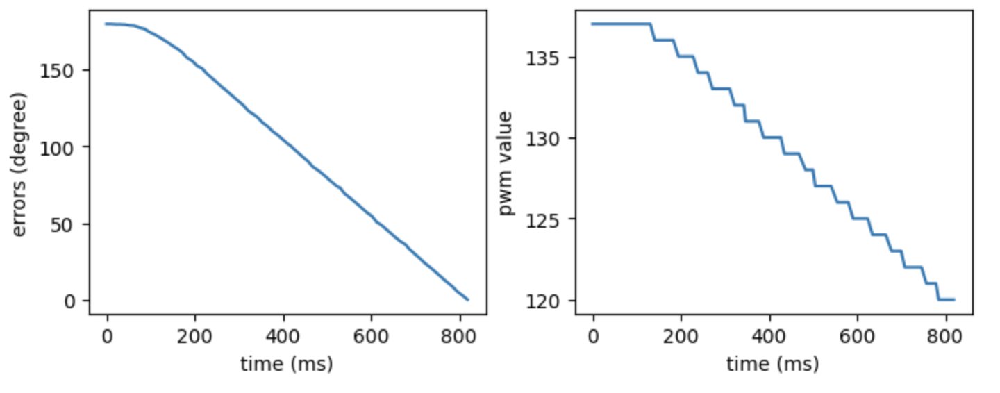Sometimes the robot did something cool. Or it magically did something right even though I wasn’t expecting it to. I need to look at the behavior and think about why and what made it do that. Different runs can also produce different results, which adds complexity to debugging. Here are some fun bloopers: